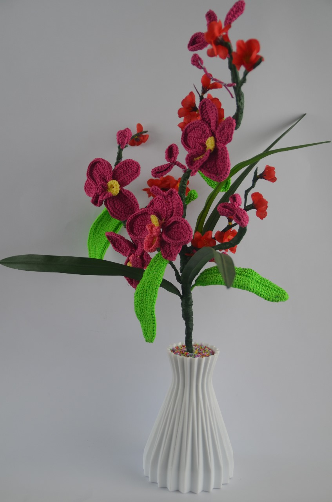
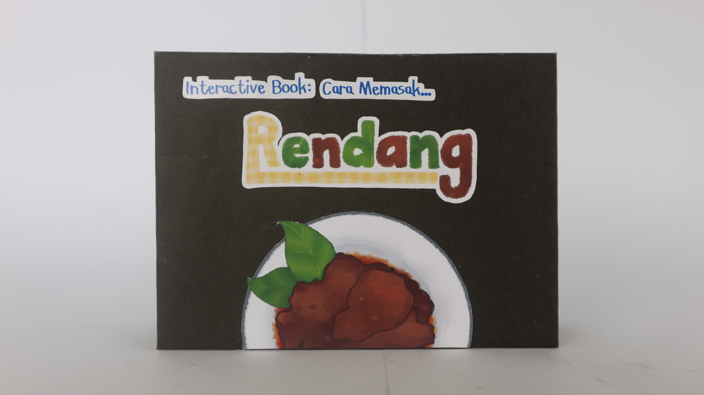
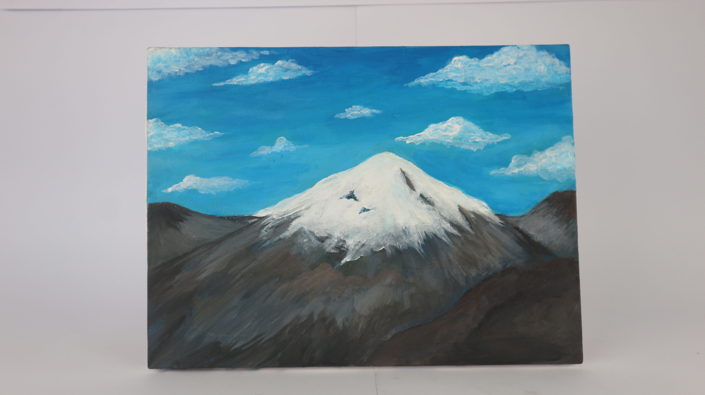

Class A





Class B






Class C


With our artworks we gonna bring you to travel to each big island in this beautiful country.
We gonna let you have different vibes in every stand, and give you more knowledge about our country, Indonesia